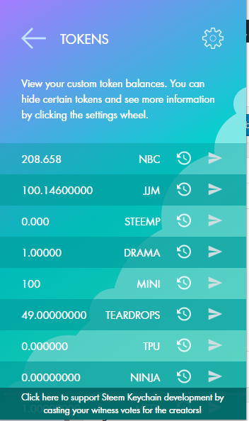

第8章 辅助工具
8.1 oflyhigh 的微信公众号 steemit 54
有一款 steem 信息查询工具，不用不知道，用了离不了。精致小巧，功能丰富，它是 STEEM 用户的一把瑞士军刀。
这款工具可以帮助你实时查询各种重要的 steem 信息，包括一个账号的 SP、声望、VP、钱包；可以为你提供发文收益百分比的建议；可以提供各种电子货币的实时市场价格……
事实上，类似的工具有不少， 但这款工具的绝妙之处在于，它是个微信公众号。你可以享受微信平台提供的一切便利，例如节省流量、反应迅速、方便转发等。只需在微信上关注它，就像跟朋友聊天一样问问题，它就会告诉你答案，实时从区块链直接读取。
这个微信公众号叫“steemit”，全称 “STEEMIT 学习与实践”，昵称“萌蛋”。它的开发者是 @oflyhigh 。
使用这个工具的前提是，你得有微信。只需进入微信通讯录，点击公众号，点右上角加号，搜索steemit，关注即可。或者直接扫描以下二维码：
目前，萌蛋主要有三个功能：
定期发布《社区周边事》
智能机器人聊天
提供 steem 查询信息
其中，《社区周边事》是由 @deanliu 和 @wilkinshui 编写的杂志，提供重要的社区资讯；智能机器人聊天是一项自动聊天功能，无聊的时候你可以跟萌蛋谈天说地，比如你对这个公众号发条信息“你是谁”，萌蛋会回答“我是棒棒哒萌蛋”；你说“我失恋了”，萌蛋会回答“中华儿女千千万，实在不行咱就换”（听这语气萌蛋像是东北人）……萌蛋还可以给你讲故事、讲笑话、翻译、查天气、算算术等等，这里按下不表。
在这里，我们重点介绍的是 steem 信息查询功能。萌蛋提供的信息大体分三类：账户信息，市场信息，系统信息。
8.1.1 查询账户信息
@steemid 查询账户概览
发送 @steemid，就可以查询账户信息概览。比如我们查查 @ned 的账户概览信息：
翻译过来，就是：
STEEM: 111873.055
SBD: 5753.431
SP: 3602770.267
收到的代理Steem Power: 1.008
代理出去的Steem Power: 1719090.678
有效 SP: 1883680.596
投票权百分比: 100.00%
点赞价值: 234.273 SBD
最近点赞时间: 04/10/2018 16:13
声望: 69.025
粉丝数量: 20622
追随数量: 916
剩余带宽: 100.00%
注册日期: 2016-03-31如果这个账户在 Power Down，那么还会增加两行：
Next PowerDown STEEM:
Next PowerDown Time:分别是下次 Power Down 的 STEEM 金额和时间。
除了用@steemid查询账户信息概览，我们还可以为这条命令后面添加参数，来查询账户的各类详细信息。
@steemid?vv 查询点赞价值
vv的意思是votevalue，即投票（点赞）价值。例如，发送留言@dapeng?vv，萌蛋的回答是：
Voting Power: 70.95%
Effective SP: 5446.72
Vote Value(Current VP):
---> 0.597 SBD
Vote Value(Full VP):
---> 0.841 SBD
Last Vote Time(UTC):
---> 2018-04-14 05:25:18
Current Time(UTC):
---> 2018-04-14 05:52:37翻译过来就是：
投票力: 70.95%
有效 SP: 5446.72
投票价值(当前投票力):
---> 0.597 SBD
投票价值(当投票力满血时):
---> 0.841 SBD
最近一次的投票时间(UTC):
---> 2018-04-14 05:25:18
当前时间(UTC):
---> 2018-04-14 05:52:37@steemid?as 查询账户资产
as的意思是assets。我们来问问萌蛋，@ned?as
STEEM: 111873.055
SBD: 5753.431
SP: 3602771.723
STEEM(Savings): 0
SBD(Savings): 1249.949
STEEM(Market): 0
SBD(Market): 0
STEEM(Rewards): 0
SBD(Rewards): 787.162
SP(Rewards): 3971.979
SBD(Conversion): 0
Total STEEM: 111873.055
Total SBD: 7790.542
Total SP: 3606743.702
Value(EST): 3907817.843 SBD得到的答案分 6 部分，相邻部分用空行分隔：
钱包资产
存款账户((Savings)
内部市场资产(Market)
待收取收益(Rewards)
转换中SBD资产(Conversion)
总资产(Total)和账户估值(EST)
@steemid?mt 查询谁拉黑你
mt的意思是muted。我们看看谁把 @ned 拉黑了，只需发送留言 @ned?mt：
@steemid?po 查询最近文章
po 的意思是 posts。发送留言 @dapeng?po，会显示文章序号、文章标题、点赞人数、收益金额。
文章取个人博客的最近10篇文章，为了减少干扰，去掉了转发(RESTEEM)的内容。取决于你最近十篇博客是否有转发内容，显示的内容会等于或者少于10篇。
@steemid?dg 查询SP代理给了谁
dg 的意思是 delegations。这条指令无须多做解释，返回的结果是这个 id 往外代理 SP 的对象，数额和时间。
@ned?dg
To: keygen1
SP: 14.510
VESTS: 29577.648341
MDT: 2018-04-29T19:41:51@steemid?fd 查询用户feed
fd 的意思是 feed。输入**@steemid?fd**，就可以查看对应ID的feed列表中最新五篇文章，不用多做解释。
@steemid?pdr 查询P账号的 owerDown 路径
pdr 的意思是 Routes。关于 PowerDown 的路径，详见：https://steemit.com/security/@oflyhigh/power-down-routes-withdraw-routes
@steemid?w 查询见证人信息
w 的意思是 witness。如果查询的 id 是见证人，那么这条留言就可以得到见证人的信息。例如：
@abit?w
-------------------
Owner: abit
WID: 952
Rank(Votes): 34
Rank(Real): 33
Status: Online
Type: TimeShare
Version: 0.19.2
Reg Fee: 0.100 STEEM
Block Size: 65536
APR : 0.00%
Missed: 187
Approval: 31171M (8.03%)
Feed: $15.607
Last block: 21553187
Rewards(per Block):0.968
Blocks(Day):35.352
Rewards(Day):34.227
-------------------
Processed in 0.5817 second(s)解释如下：
Owner: 见证人的所有者WID: 见证人IDVersion: 见证人节点版本号Reg Fee: 账户注册费Block Size: 最大块大小APR: SBD年利率Missed: 丢块个数Approval: 总投票量以及占比Feed: 喂价Last block: 最后确认的区块编号
8.1.2 查询市场信息
用萌蛋可以很方便地查询各种电子货币的市场信息。
tk 查询内部市场报价
tk 的意思是 ticker。Steemit 的市场（Market）界面，可以将文章收益的 SBD 购买成 STEEM 然后POWER UP，还可以通过低买高卖赚取差价，最重要的是内部市场交易，没有手续费。用 tk 来查询实时价格，有助于你迅速对市场做出反应。
tk
Bid: $1.011829
Ask: $1.033194
Last price: $1.028546(0%)
24h volume: $25310.59
24h volume: 24080.299 STEEM
Processed in 0.2387 second(s其中：
Bid: 出价，亦即购买，这里显示买单中出价最高的
Ask: 要价，亦即出售，这里显示卖单中叫价最低的
ob 查询市场订单信息
ob 的意思是 order book。发送留言 ob 给萌蛋，就得到如下回复：
Buy Orders:
1) Price: 1.000998
SBD: 105.225 STEEM: 105.120
2) Price: 1.000000
SBD: 76.639 STEEM: 76.639
3) Price: 1.000000
SBD: 0.016 STEEM: 0.016
4) Price: 1.000000
SBD: 0.012 STEEM: 0.012
5) Price: 1.000000
SBD: 0.021 STEEM: 0.021
Sell Orders:
1) Price: 1.001033
STEEM: 68.855 SBD: 68.926
2) Price: 1.010787
STEEM: 37.268 SBD: 37.670
3) Price: 1.025000
STEEM: 0.040 SBD: 0.041
4) Price: 1.032976
STEEM: 2.517 SBD: 2.600
5) Price: 1.033079
STEEM: 664.927 SBD: 686.922
------
Processed in 0.2326 second(s)给出了买（buy）和卖（sell）的价格（price）。可以简单理解成
提供SBD，想得到STEEM的行为为买。
提供STEEM，想得到SBD的行为为卖。
查询 BTS 等价格信息
公众号输入电子货币的简称，就可以返回该货币对人民币CNY或美元USD的价格。目前萌蛋支持查询的指令包括：
bts
yoyow
eos
steem
open.btc
open.eth
gdex.btc
gdex.eth
open.doge
open.sbd
ipfs
不用多做解释，都可以顾名思义。
除此之外，还可以用!bitshares_id格式的指令来查询某个账号在 bts 的资产情况。这些指令跟本书关系不大，因此就不详细介绍了。
8.1.3 查询系统帮助信息
pu 发文建议信息
pu 的意思是 power up。在发帖的时候，Rewards 一栏会有 50%/50% 和 100% 的选项。对此的解释详见这里。发送留言 pu，萌蛋会告诉你发帖时该选择哪一个才最划算。
pu
Feed Price: 1.805
Market Price: 1.033
SBD Prt Rate: 88.66%
Reward:100.000 SBD
Curation: 13.850 SP
Power UP 100%
Steem Power: 41.551
系统估值:75.000 SBD
市场价格:42.932 SBD
50%/50%
Steem Power: 20.776
SBD: 33.248
STEEM: 2.356
系统估值:75.000 SBD
市场价格:57.148 SBD
发文建议:
Default(50%/50%)在这条长长的信息里，先是假设一篇文章 100SBD 作者收入，在当前行情下，不同选择的估算价格以及市场价格，萌蛋会给出相应的建议。如果你不懂每行的具体含义，那么就看最后一行就行了。
info 查询区块链信息
info
API Ver: 0.19.4
-------------------
Head: 21581487
Irreversible: 21581472
Feed Price: 2.596 SBD/STEEM
Market Price: 1.086 SBD/STEEM
Total Accounts: 943657
Blockchain Time: 2018-04-15T06:38:33
-------------------
Processed in 0.5531 second(s)解释如下：
API Ver 是 API 节点版本
head 和 irreversible 分别是最新区块编号以及最新不可逆区块编号。当需要遍历区块的时候，这两个很有用。我们的程序不正常的时候，可以与这两个区块对比一下，看看是不是程序延迟太大。
Feed Price 和 Market Price：喂价和市场价，分别代表 STEEM 的c urrent_median_history_price 以及 STEEM 在内部市场的当前价格。这个价格信息和
pu指令返回的部分内容相同。Blockchain Time 是最新区块的时间。
?查询帮助信息
上面介绍了这么多查询指令，怎么可能记得住呢？别担心，萌蛋会贴心地提醒你有哪些指令可用。只需发送留言? 或 help 或帮助，就会返回一个简短的帮助。
?
欢迎来到STEEMIT学习和实践!
@steemid 查询账户信息
@steemid?vv 查询投票价值
@steemid?as 查询账户资产
@steemid?mt 查询谁拉黑你
@steemid?po 查询最近文章
@steemid?dg 查询SP委派
@steemid?fd 查询用户feed
@steemid?pdr 查询PowerDown Routes
tk / ?ticker 查询市场报价
ob / ?orderbook 查询订单信息
pu / ?powerup 发文建议信息
bts 查询BTS价格信息
yoyow 查询YOYOW价格信息
open.eos 查询OPEN.EOS价格信息
open.btc 查询OPEN.BTC价格信息
open.eth 查询OPEN.ETH价格信息
open.steem 查询OPEN.STEEM价格信息
gdex.btc 查询GDEX.BTC价格信息
gdex.eth 查询GDEX.ETH价格信息
指令说明：
vv=votevalue
as=assets
mt=muted
po=posts
dg=delegations
fd=feed
短指令长指令效果相同指令
指令示例：
@oflyhigh
@oflyhigh?vv
@oflyhigh?assets
....以上我们用三篇帖子介绍了微信公众号 steemit 也就是萌蛋的常用功能和用法。更多的功能仍在开发中。一般情况下，每有新功能推出，萌蛋的主人 @oflyhigh 都会在 steemit.com 发帖详细介绍。如果你感兴趣，那么就请关注他吧。
8.2 justyy 的在线工具和 API 接口
8.2.1 STEEMIT API 服务器
@justyy 提供了4个免费的STEEMIT API服务器 分别于世界不同的地方供免费使用 (fair use policy)，API接口 (End Point) 是 /api/steemit/
- 美国东部: helloacm.com
- 日本东京: happyukgo.com
- 英国伦敦: uploadbeta.com
- 美国西部: steakovercooked.com
8.2.2 查看你和朋友的对话 55
想要在steem区块链上快速找到您和朋友之间的对话？ 此工具将检索两个steem帐户之间的对话（评论）。
工具地址 https://steemyy.com/steem-conversations-viewer/
工具使用方法 输入两个STEEM帐号ID，然后点击查询即可。可选输入过滤评论关键字。
截图
工具原理 使用 steem-js 库对 两个帐号同时进行地毯式搜索，把对话（评论）内容输出来。本来想用 steemsql 的（缓存数据库），不过它家的月费是20 SBD，有点贵，如果将来不用STEEMSQL了 那么所有的基于它的工具都不能用了， 所以还是用最原始的方法来做，并且这样的获取的数据始终是最新的。
8.2.3 查看你的帐号信息 56
基于 Steem-JS 撸了一个查看STEEM帐号信息的工具。地址如下： https://steemyy.com/account-data/justyy 可以把URL最后面的ID换成你的STEEM ID就可以打开使用了。
工具显示了STEEM帐号的一些基本信息以外，还列出了最近给你发钱的帐号、金额和附言等信息。
8.2.4 您的见证人信息页面 57
STEEM区块链上活跃的见证人大概有100来个，他们是STEEM区块链上不可缺失的一环节：把STEEM上所有的活动都打包成块，出块的时候相应的得到SP作为奖励。
我弄一个简单的页面，显示见证人的基本信息和最新出的块：
工具地址： https://steemyy.com/witness-lookup/justyy 可以把最后面 justyy 改成你想要看的见证人帐号名称，比如 https://steemyy.com/witness-lookup/abit
8.2.5 查看STEEM区块链上最受欢迎的代理 58
STEEM 区块链上一个很好玩的功能就是你可以把你的STEEM POWER代理给别人。有很多项目都有很多人参于。如果我们想发现STEEM上比较火的项目，我们可以用以下几个工具。这几个工具对应的API由于处理耗时较久，所以并不是实时的数据，一般情况下有几分钟的延时。
按代理人数显示最受欢迎的STEEM帐号 工具地址：https://steemyy.com/list-of-top-delegations-by-count/ 打开，稍微片刻就能把STEEM区块链上最受欢迎的帐号按代理人数列出来了， @justyy 银行代理位列前10.
按代理总数显示最受欢迎的STEEM帐号 工具地址：https://steemyy.com/list-of-top-delegations-by-sp/ 如果是按代理SP总量，则 @utopian-io 位居第一。
查看一段时间内（最近）大额的代理记录 工具地址：https://steemyy.com/list-of-top-delegations/ 默认显示过去一周中大额代理的记录：
8.2.6 Steem 钱包转帐查询工具 59
有时候我想搜索一下某条转帐记录，苦于记不太清楚时间，于是只能不停的刷或者翻页来找，很不方便，于是想着做一个简单的钱包转帐查询工具，可以满足这样的需求。
工具地址：https://steemyy.com/advanced-transfer-viewer/
使用方法 只需要输入 ID 然后可以设置参数来限制搜索范围：
- 货币单位可以是SBD或者是STEEM
- 附言是加密过的或者是普通的
- 你发的或者是你收到的
- 有写附言或者是没写附言的
- 发送者ID、接收ID还是附言带着字符串的
- 数量在一定范围内的
每条记录都可以通过链接来获得具体所在块的信息 (steemd)。
8.2.7 STEEM 自动领赏工具 60
文章收益7天后得领赏，如果不通过程序自动领赏的话就得人为的去点领赏的按钮。并不是所有人都是能付得起24/7服务器的程序员，也并不是所有人都喜欢人工去领赏的这么一个过程。
这个网页版本的工具是基于 steem-js 库开发的。完全是客户端，只需要填写ID和私钥（不会被保存或者上传），选择一个时间间隔即可让领赏程序自动在后台运行，然后你就可以该干嘛干嘛了。
8.2.8 踩人与被踩 61
这两天 utopian.io 被黑 - Utopian.io 被黑，你可能关心的一些问题 / 如何移除授权 你可能想知道自己有没有中招。中招的表现就是你会当枪使：去踩 haejin。
踩在STEEM上是标红旗的动作，一般来说就是文章三观不正，但也经常被误用于表示情绪的不满。踩人最直接的表现就会让该帖子收益变少(如果踩人者的有效ESP、能量都很足的话)，甚至能让帖子变灰，也可能让作者的声誉值变少（如果踩人者的等级比被踩者的高）。
查看你踩人的记录 工具地址：https://steemyy.com/list-of-flag/ 支持URL后 ?id=steem_id 帐号参数
填写ID 然后点击按钮稍微即可得到该帐号过去一年内踩人的记录。
被踩 类似的，如果是查看别人踩过你的记录，那么请用工具： https://steemyy.com/who-downvote-you-steemit/
踩人与被踩都如泼出去的水 区块链总是会忠实的记录你的一言一行。比如A踩了B，之后撤消了，这样也会被显示在结果中，因为只要踩过，这就会被记录在STEEM区块中，大概类似是：
块 12345: A downvote (-100) B … 块 12349: A unvote B
所以，踩之前请三思！
8.2.9 同时给多个帐号发送SBD或者STEEM 62
STEEMIT 和 BUSY 的前端都有一个内置的钱包工具，您可以一次给一个帐号发送 SBD 或者 STEEM。当我们要给很多很多人发送钱的时候，就显得有些不方便了。这时候可以用这个在线工具：
https://steemyy.com/wallet-tool/
填写表单 只需要填上你的ID、私钥(active key)、需要发送的金额（最少0.001）、选择SBD或者STEEM，然后把收款人的ID放在每一行上，如下：
MEMO 就是附言，这里可以用 [username] 来替代收款人的ID。私钥不会被上传或者保存，只会在浏览器中调用 steem.min.js 的时候使用到。
点击 发送 将会有一个最终确认：
然后显示已经发送成功了！
在区块链上已经有记录了。

这个小工具用来群发消息或者发些奖励再适合不过了。不过当前版本的局限性就是每个收款人的金额是一样的。
8.2.10 见证人代理查询 63
之前我们了解到一个STEEM帐号可以有30票投给见证人，如果您有选择困难或者不愿意费心一个一个投，您可以设置 SteemIt 的见证人代理 (Witness Proxy) 。这个见证人代理就会全权代理你来投票：他/她投谁，那么你就跟投谁。
比如大神 @abit 设置 @smooth 为见证人代理，在 steemd.com/@abit 上就会有这样的信息：
@abit uses smooth as a voting proxy.
见证人代理是可以串起来的，比如 同时很多人设置 @abit 为见证人代理。
如何设置见证人代理 通过 steemconnect 把下面的 proxy 参数设置成您想要设置的代理见证人即可，取消见证人代理需要把 approve=1 改成 approve=0
https://v2.steemconnect.com/sign/account-witness-proxy?proxy=justyy&approve=1
查看谁设置您为代理见证人？ 设置您为代理见证人的都是真爱，他/她们对你如此相信，把选票全权交到您手上。
我们可以通过工具：https://steemyy.com/list-of-proxy/ 来查看谁设置您为代理见证人。
输入 ID，按回车或者点击按钮，一会儿就会显示列表：
API API访问接口如下：
数据将以JSON格式返回，每一行就是一个见证人信息，其中包括了以下字段：
account proxy timestamp
如果 $_GET 参数 s 没有指定，该API接口也会去找 $_POST 变量 id。
curl -X POST https://helloacm.com/api/steemit/proxy/ -d “id=justyy”
8.2.11 见证人相互投票 - 谁没有给你投票? 64
见证人也是互相抱团的，网红 @jerrybanfield 给我留言，问我是否能提供一个工具能用于查看投你为见证人的支持者、和你相互抱团的见证人 还有没给你投票的见证人。
工具地址 > https://steemyy.com/list-of-mutual-witness/
使用方法 在文本框里输入您的 STEEM ID 按回车或者点击查询按钮即可。
这个工具能做什么？ 它能够获取以下信息：
- 您的支持者，也就是谁投了您为见证人，列表将会链接到这个在线工具。
- 您支持的见证人，这个列表会在这个在线工具中，您可以查看谁离线了。
- 您支持的见证人中谁并没有投您为一票。需要注意的是：有些人使用投票代理，所以并不是直接的投票。
- 相互抱团的见证人列表，也就是你投他/她，他/她也投你。
API 程序接口(Application Programming Interface) API访问接口如下：
将返回4个JSON数组：
- voted (您的支持者)
- votes (您支持的见证人)
- not (您支持的见证人中谁没有给您投票)
- both (相互投票者)
如果 $_GET 参数 s 没有指定，该API接口也会去找 $_POST 变量 id。
curl -X POST https://helloacm.com/api/steemit/witness_voters/ -d “id=justyy”
8.2.12 Discord 机器人 65
Discord 原本是给游戏设计的，但由于其功能多，接口开放能力强，使用的用户越来越多。我们CN区也有一个Discord 频道，加入地址为：
在网页里就可以加入 cnsteem 的大家庭了，当然也可以下载手机APP或者桌面程序来加入 discord。
相比微信群，Discord 没有500人限制，也可以无限时的撤回和修改消息，更重要的是，每个频道的聊天信息都是保存在服务器的，所以可以很方便的查看聊天记录。Discord 的每个频道都是一个聊天室，用于讨论不同的主题。
我弄了两个Discord机器人，一个是 币价机器人 cryptocurrency，另一个是 steemit 机器人。我们可以分别添加这两个机器人为好友，通过和机器人私聊来对机器人发出指令，当然我们也可以在公共频道里发出指令（这样大家就可以信息共享）。
两个机器人都支持 命令 ? 或者 help 来列出帮助。
币价机器人 cryptocurrency
币价机器人 cryptocurrency 的安装地址（您可以添加到其它的 Discord 频道里）
这个机器人的使用方法和 justyy 在线工具与 API 系列 - 炒币必备 CoinTools 的命令使用是一样的：
- 虚拟货币和法币：
SBD USD命令查询 1 个 SBD 等于多少 USD - 法币和虚拟货币：
CNY BTC命令查询 1 元可以买 多少个 BTC - 虚拟货币和虚拟货币：
BTC SBD命令查询 1 个 BTC 等于多少 SBD - 法币和法币：
USD CNY1美元等于多少RMB - 虚拟货币查询：直接输入虚拟货币的代号，比如 SBD 或者 steem-dollars
- 在前面的查询前可以加上数量，比如
100 SBD USD查询 100 个 SBD 等于多少 USD - 还可以这样玩：
SBD 2 BTC查询 多少个 SBD 能换 2 个BTC
币价数据是从 coinmarketcap 取得。
steemit 机器人 该机器人的用途是用于查询 steemit 帐号和信息，您可以添加到您自己的 Discord 频道里：
https://discordapp.com/oauth2/authorize?client_id=418196534660694037&permissions=522304&scope=bot
命令 info 将获取 STEEM区块链的一些信息：
使用 ?steemit_account 来查询一个 steemit 帐号，比如:
使用 p 命令来获取是否 50/50% 发文的建议
使用 w steemit_account 来获得 steemit 见证人的信息，例如：
8.2.13 查看被删除的帖子或评论 66
大家都知道，STEEM上的一言一行都是会被记录在STEEM区块链上的，哪怕是7天内可以修改（或者删除）文章或者评论，修改的记录也都是会被忠实的记录的。不相信？这个在线工具就可以做到把删除过的评论给列出来。
工具地址 中文：https://steemyy.com/list-of-deleted-comments/ 英文：https://steemyy.com/deleted-comments/
使用方法 把 ID 输入文本框中并按回车或者查询按钮即可：
这时候点击 链接 Permlink 就能看到删除前的文字。
API 使用下面API接口
会返回JSON格式的数据，数组中的每个元素含有以下字段：
tx_id permlink timestamp block_num transaction_num ref_block_num ref_block_prefix expiration type previous witness witness_signature transaction_merkle_root
如果 $_GET 参数 s 没有指定，该API接口也会去找 $_POST 变量 id。
curl -X POST https://helloacm.com/api/steemit/deleted/ -d “id=justyy”
API 并没有直接返回被删除的文本，但是其中 permlink 就非常有用，我们可以通过 steemdata 工具来查看详细的修改记录（当然就可以看到删除的文字了），比如：
最后，请记住：谨言慎行。
8.2.14 查看代理 67
在我所有的SteemIt工具中，查看代理的两个工具最受欢迎。
代理能量 比如我有两个号A和B，我想把A的1000个Steem Power 给B。但是Steem Power 需要3个月时候可以 Power Down 成 Steem（每7天系统把1/13变成Steem)。由此可见，这并不是最好方法，因为： 1. 过程慢 2. 如果B号不是你自己的帐号，那么通过这条路径把STEEM从一个帐号转到另一帐号就很有可能有去无回了。
STEEM代理就是为了解决这两个问题，简单来说，你可以把自己的Steem Power借给另一帐号，代理SP就如把一只会下蛋的母鸡(SP)借出去，从此，下的蛋立刻属于受赠者，但是这只母鸡却还是属于你，而且你也不用担心母鸡被杀人了炖汤吃。
代理和取消代理都可以通过这个在线工具来完成。有几点我们需要注意的：
- 代理的能量必须是属于自己的，也就是说别人代理给你的SP你是不能再代理给别人的。
- 自己代理出去的能量是不能再代理给另一帐号的。
- 代理立刻生效。
- 取消代理输入 0
- 取消代理，受赠者立马失去了对SP的使用权，但是这些SP也需要7天才能被代理者再次使用。
代理查看工具 如果，A借给B，那么我们可以： 1. 查看A (Delegator) 借出的所有SP代理情况：https://steemyy.com/list-of-delegatees/ 2. 查看借给B (Delegatee)的所有代理情况：https://steemyy.com/list-of-delegators/
使用方法
就拿 YY银行来说，我们可以通过 https://steemyy.com/list-of-delegators/?id=justyy 来看把能量借给 @justyy 的情况，这里我们在工具地址上添加了参数 id=justyy 自动把页面上的 Steem ID 填上了 justyy
很快，我们就得到了所有代理情况，默认是按照代理SP的数目从大到小排序，您也可以点击表头来对个别字段进行排序。
API 获取 STEEMIT 反向代理委派列表的 程序接口 API 您只需要传入 ID参数就可以 ：
https://helloacm.com/api/steemit/delegatees/?cached&id=justyy
返回JSON数据，数组每个元素含有以下字段：
time vests sp delegator
下面是API返回的一个例子：
[{“time”: “2017-09-17 22:46:18”, “vests”: 1890000.0, “delegatee”: “mrsquiggle”, “sp”: 917.8161972282788}]
如果 $_GET 参数 s 没有指定，该API接口也会去找 $_POST 变量 id。
curl -X POST https://helloacm.com/api/steemit/delegatees/ -d “id=justyy”
如果您想查看谁把SP代理给了你（搞不好哪天就收到了 @ned 的代理呢），您可以把上面的 delegatees 换成 delegators
8.2.15 查看您投票的见证人 68
我成为见证人有一个月左右了，然后就和其它见证人一样，到处拉票，特别是手上拥有大量SP的大鱼更是一票难求。
我在拉票的过程中，有些大鱼人比较 nice 则会说，“我手上30票已经满了，等哪天有人不在线上了，我就投你票”。好吧，这一等不知道得等多久……
这下好了，今天走在马路上琢磨着这事，想着，写一个工具，把你投票的见证人的状态全列出来，这样谁不在线上了，一清二楚，拿着这个数据再去找大鱼，估计他也很难再搪塞了吧，嘿嘿，说干就干，今天很顺利，代码一调就过。
离线的见证人 见证人的服务器离线了，很有可能是： 1. 不玩了 2. 机器硬件不够了（内存不够了） 3. 配置错误（私钥错误等）
如果您的见证人一直处在离线状态，那么请考虑取消对于他们的投票，这样才能把您手上珍贵的一票交到更需要的人手上，比如我 [投票给 @justyy](https://steemconnect.com/sign/account_witness_vote?approve=1&witness=justyy)。这个小工具能列出您所投票的见证人信息。
工具地址 中文：https://steemyy.com/list-of-witness/ 英文 https://steemyy.com/witness/
使用方法 只需要在 STEEM ID 文本框里输入 ID 并按回车（或者点下方绿色的按钮）即可
一会儿就得到了结果，比如：
状态那一列如果红色字体就表示该见证人离线了，可以点击链接 取消投票 来空出一票。
取消投票是链接到 steemconnect:
原理
通过 STEEMSQL 获取见证人信息，其中 Signing Key 如果含有大量的1 就表示下线了，比如 STM1111111111111111111111111111111114T1Anm
API 程序接口(Application Programming Interface) API访问接口如下：
https://helloacm.com/api/steemit/account/witness/?cached&id=justyy数据将以JSON格式返回，每一行就是一个见证人信息，其中包括了以下字段：
sbd_interest_rate total miss_rate account_creation_fee_symbol last_sbd_exchange_update maximum_block_size sbd_exchange_rate_base_symbol votes votes_count last_aslot running_version signing_key account_creation_fee total_missed hardfork_version_vote last_confirmed_block_num hardfork_time_vote sbd_exchange_rate_quote sbd_exchange_rate_quote_symbol url name created
如果 $_GET 参数 s 没有指定，该API接口也会去找 $_POST 变量 id。
curl -X POST https://helloacm.com/api/steemit/account/witness/ -d “id=justyy”
8.2.16 CoinTools 介绍 69
我之前很零碎的开发了查询STEEM/SBD币价的功能，把同样的功能放在公众号](https://justyy.com/archives/6086) 或者 Discord 频道里，但终究觉得不够直观，因为用户需要键盘敲入命令才能查询，这很程序员思维的设计。
我想着如何让币价查询变得再简单一些，于是我想到了做成Chrome浏览器插件，因为我觉得这是最好的入口： 1. Chrome 浏览器的市场占有率接近60% 2. Chrome 浏览器扩展是个非常方便的入口（右上角） 3. Chrome 浏览器扩展的安装方便 (Google Webstore) 自动更新 4. 跨平台
实现技术 大佬 Jeff Atwood 曾经说过： > Any application that can be written in JavaScript, will eventually be written in JavaScript
意思就是，如果一个软件能用Javascript 来写，那么终究，它就会被用Javascript 来写。
安装 首先，您需要使用 Chrome 浏览器，当然如果您使用的是 Firefox，也许可以通过 Chrome Store Foxified 来使用 大部分 Chrome 扩展。
然后，在 Google Webstore 的 CoinTools 安装地址点击 “添加到 Chrome” (或者 “Add to Chrome”) 就可以了。
https://chrome.google.com/webstore/detail/coin-tools/fmglcggbdcbkpkfapngjobfeakehpcgj
源代码 开源： https://github.com/DoctorLai/CoinTools 感谢各国友人提供界面翻译：https://github.com/DoctorLai/CoinTools/tree/master/lang
使用的API CoinTools 采集了以下三个数据源的数据： - CoinMarketCap - CryptoCompare - Coinbase
使用方法 点击右上角的 XRP 图标 即可打开 CoinTools:

软件设置 CoinTools软件的默认语言是英语，在第一次使用的时候可以通过 Settings 标签页来选择成其它您喜爱的语言（支持十来种语言）：
在这个界面设置里，我们还可以设置本地的法币，比如人民币。最下面的这个 “货币转换” 这是软件的精华。在这里，可以自定义我们想要看的信息，每一行就是一个查询命令。比如：
- 虚拟货币和法币：
SBD USD命令查询 1 个 SBD 等于多少 USD - 虚拟货币和虚拟货币：
BTC SBD命令查询 1 个 BTC 等于多少 SBD - 法币和法币：
USD CNY1美元等于多少RMB - 虚拟货币查询：直接输入虚拟货币的代号，比如 SBD 或者 steem-dollars
- 在前面的查询前可以加上数量，比如
100 SBD USD查询 100 个 SBD 等于多少 USD - 还可以这样玩：
SBD 2 BTC查询 多少个 SBD 能换 2 个BTC
通用 软件一启动，所看到的页面，显示市场概况，更重要的是一些我们想看的币价信息，也就是上面所自定义的：
新闻 显示着一些英文的关于虚拟货币的一些文章 (Feed):
排名 默认列出了前200名的虚拟货币（按市场总量）：
我们可以搜索，边敲字符就可以马上得到结果 (Instant)
点击虚拟货币的名称，可以得到额外的一些信息：
图表 所有市场总值（美元）
24小时市场占用量（美元）
工具 该工具可以转换任意两种货币（虚拟货币或者法币）
数量为负的时候则会把转换的货币调换，如上图所示。
历史 任意天数，任意币种之间的历史数据，包括了 Open, Close, Low, High 和 Average 五条曲线 （默认只显示 平均，也就是 当日最高+最低价除于2）。
配对 该功能用于显示交易所中该币种的配对情况，如：
总结 这个工具，我相对来说 还是较满意的，因为：简单、好用。
8.3 dapeng 的 steemr 70
steemr 被收录在 steemit 官方推荐的 Steem project 和 steem tools 中，以及 steemit 布尔根兰学院 的推荐工具里。
指定 ID 的所有帖子查询 71
Steem 有个让人无比郁闷的毛病：想一目了然地看一个人的所有帖子，你得往下拉，等着载入，再拉，再等……尤其是那些发布了几百上千篇帖子的大神，想看他们的旧帖，在 steemit 上难比登天。我只能去 chainbb，那里支持分页，点第一页就行了。但是，你还得点页码，仍然不是很方便。
为啥就没个文章全部列表呢？连杀人鲸 @deanliu 都抱怨：
我其實等待這樣的我所有文章列表很久了，Steemit老是把resteem跟自己文章放一起，大半年了，說過的人甚至走一半了，也沒見有人理會。這樣列表的好處是，可以很快找到自己的很久以前舊文章……
如今，能做到展示全部文章列表的，大概只有我量身定做的 steem 镜像网站了（[@deanliu 的镜像](https://deancrypto.netlify.com)， [@dapeng 的镜像](https://dapeng.netlify.com/)， [@pzhao 的镜像](https://pz.netlify.com/)）。只是我仍不满意：没做镜像的怎么看？想看某人收益最高的帖子怎么办？每次都查数据库，太烦了。
于是我二话没说，操起 R 语言，光光光光，做好了，欢迎大家来调戏，地址是 http://steemr.org。是的，就是我开发的 steem 水浒英雄榜那个地址。英雄榜退居二线，给帖子一览表让让位。
只要输入个 steem 账号，按回车，就显示这个账号的所有 blog 帖子（不包含 resteemed）。功能如下：
默认每页显示 20 篇文章。你可以点击表格左上角的数字，选择每页 50 篇，或 100 篇，或全部显示。
每篇文章都给出了发布时间、收益（SBD）和点赞数量。点击标题栏，就可以实现排序。按时间顺序、逆序，按收益最大或最小，随便你排。
表格左上角和下方都有搜索栏，可以搜索标题里的关键字。例如在 Date 一列下面的搜索栏搜索 ‘2017-07’，就会过滤出 2017 年 7 月的文章列表。此时再点击标题栏的 payout 排序，就筛选出 2017 年 7 月 收益最高的帖子了。
每篇文章都给出了在 steemit , cnsteem, chainbb, busy, steemdb, steemd 的链接，点一下直达（如果被浏览器阻挡的话，按 ctrl + 点一下就在新标签打开了）。
附带给出了统计图表，展示作者累计收益、累计点赞、累计文章数量和 24 小时活跃时间的统计图。
下图是某人的作息时间图。猜猜这个人生活在哪个时区？
以前，有位新朋友为了方便访问自己帖子的某个分类，就为自己创建了个性标签，后来发现七天限制的问题，只能作罢。
其实，上面这两个问题，都容易解决：去 steemr，到文章展示厅，输入 id 回车，右上角搜索栏输入文章标签，就可以查看自己私人的分类标签文章了。
例如，输入 dapeng 回车，搜索栏输入“cn-31”，就可以看到历届三个一活动的发起帖和颁奖帖，帖子里是所有参赛作品和获奖作品列表。
粉丝大厅 72
用起来很简单：
- 点击
Follower report标签，输入你想查的 ID，点击GO按钮，等几秒钟或十几秒钟（取决于服务器的速度和 你要查的 ID 的情况）就可以看到结果了，包括粉丝 （followers） ID 的词云图，按这些粉丝的粉丝数量、发帖数量和vests大小排序。如果粉丝超过30个，就取前三十个。词云图下方，还给出了尚未互粉的 ID 列表。
水浒英雄榜 73
《水浒》里面哪段情节最激动人心？我觉得是“忠义堂石碣受天文，梁山泊英雄排座次”。小说开头放出的 108 员天罡地煞星，历经千难万险，终于再度聚齐。英雄好汉们按威望（Reputation）、能力（ESP）、财力（Account Value）、长幼（Online Days）等综合实力排名次，上下有序，一片和谐，摩拳擦掌，准备干一番大事业。就像来自五湖四海的 Steemit CN 用户，最近纷纷聚到了同一个微信群。不知大家怎么看，反正我有种“英雄好汉齐聚梁山泊”的感觉。
1、可以输入一个 ID，给出该 ID 的声誉、权力等各项指标排位座次，以及邻座坐的是谁。看看谁坐在我旁边：
2、可以给定一个名次范围，画出该范围内的名单词云图，谁越排在前面，谁的名字就越大。
3、除了同样给出了全部名单列表，并且点击每列标题就可以顺序逆序外，还可以过滤。可以选择根据不同指标得到的座次，列在名单第一列，默认按ESP（实权）排序。注意，最后一列的英雄角色永远参照 ESP。
来，我们搜索一下声望值超过 70、注册时间为 410多 天的名单：
4、名单的列数比较多，新版名单可以选择显示哪些列。
5、随着入伙人数越来越多，名单也越来越长，所以支持分页展示。梁山 108 条好汉，分 36 天罡星和 72 地煞星，名单里默认显示 36 天罡。当然你可以选择显示全部名单。
5、 统计图表显示各项指标的分布图。例如，下图表示所有群友（175位）账号的声誉（reputation）分布。最小的声誉值为 4， 最大的是 75。一半账号的声誉值在 51 以上（即中位数，median，蓝线）。25 % 的账号声誉值低于 41（绿线），25% 的账号声誉值高于 59 （红线），而 41 和 59 之间，集中了半数的账号。由于不是正态分布，所以平均值和标准偏差的意义不大，这里仅给出了平均值（mean）。
这个排名座次有没有让你联想到什么？我联想到了很多，于是给这个名单取名为：
Steem 中国聚义厅
你想加入英雄榜吗？请联系 @dapeng 入伙。
好了，来看看吧，在 Steem CN 的聚义厅里，你是哪条英雄好汉？坐哪把交椅？
月旦评琅琊榜 74
在 @rivalhw 发布【广纳建言】关于设立“琅琊榜”提议的一些思考后，steemr 新增了月旦评查询功能。
目前，月旦评琅琊榜分三部分：琅琊文章榜，琅琊人物榜，月旦评历史发展曲线，实时在线显示。用的是 steemsql 数据库，可能比区块链的数据会有点滞后。大家先凑合看。
文章榜列出了史上所有投稿给月旦评的文章（以文章标题里有“月旦评”并且标签里有“cn-reader”为准），左下角显示了文章总数。快 700 篇了。默认是按时间逆序排列，最新的排在前面，方便大家尤其是评委们浏览。
点一下每列的标题栏（列名称），就可以按该列排序；再点一下，就反序排列。
点击左上角的 “show x entries”，可以选择每页显示多少篇。最大值就是目前参加月旦评的文章总数。
表格右上角和每列底部都有搜索栏，可以搜索任意关键词。例如，在“日期”列底部输入 ‘2017-12’，就会列出本月文章清单。
往搜索栏输入奖项的编号或全称，例如“2”或“榜眼”，就可以得到历届榜眼清单。
此外，活动的发起帖和总结帖也一直混在投稿里，这回趁升级，我把他们挑出来，整理在另一个表格里，按时间先后顺序。大家可以很方便看到活动的缘起和发展脉络。
人物榜列出了史上所有参加月旦评活动的作者，统计了每个作者的投稿数量、从月旦评活动得到的累计收益和点赞数量。使用方法跟文章榜类似。左下角显示了参加活动的累计人数。默认按照投稿次数从高到低排序。他们真能写！
月旦评历史发展曲线给出了月旦评活动累计的投稿数量、文章收益和点赞数。
三个一和好声音 75
steemr 新增了个更为强大的页面，来展示史上所有参加三个一活动的帖子列表、作者名录，以及统计数据。
用法很简单：
访问 http://steemr.org ，目前默认直接打开“三个一活动”页面，出现两个表格和三个图。
单击表格里的文章标题或作者会跳转至 steemit。有的浏览器因安全级别高而屏蔽了跳转，改用请用 ctrl + 鼠标左键单击即可;
点一下每列的标题栏（列名称），就可以按该列排序；再点一下，就反序排列。 点击左上角的 “show x entries”，可以选择每页显示多少篇。最大值就是目前参加活动的文章总数。
表格右上角和每列底部都有搜索栏，可以搜索任意关键词。
例如，在“日期”列底部输入 ‘2017-12’，就会列出当月文章清单。
例如，在搜索栏输入 lovemyson，就会筛选出这位作者的所有参赛作品及收益和点赞数量。
作者列表里，显示了参加活动的名单和累计发帖数、累计收益、累计获赞数。
统计曲线给出了按时间记录的累计投稿数量、文章收益和点赞数。迄今有46 位作者、92篇文章参加了“三个一”活动，累计给大家带来 800 SBD的收益。
除了“三个一”，我用同样的框架，把“华语好声音”的参赛情况也做了个页面，访问地址相同，点击顶部“华语好声音”标签即可。
8.4 其他工具
8.4.1 工具汇总站
除了前面三个章节介绍的 @oflyhigh @justyy @dapeng 这几位国人开发的软件外，还有很多外国人开发的有用、有趣、功能强大的辅助工具，数都数不尽。这些工具，一方面可以帮助你在 steem 上玩出更多花样，另一方面也启发我们，以 steem 为基础能开发哪些产品。
这些工具哪里找？我推荐几个去处：
steemprojects.com。这是 steemit 官方推荐的资源汇总站， 对各种 Steem 应用、网站和工具进行了分类整理和介绍。
steemtools.com。这是steemit 官方以前推荐的汇总站，后来被 steemprojects 取代。
steem 布尔根兰学院。这是一群奥地利 steem 用户创办的网站，他们根据自己的使用经验推荐了一些工具。
此外，@tumutanzi 曾撰文推荐过一些小工具，只是由于时过境迁，其中有些如今有了较大变化，有的已经被更新更好的工具所取代了。
这些工具，有些功能大同小异。我们只需找到几款自己喜欢的，足够日常使用即可。
在此，我简单介绍几款我自己收藏夹里的强大而便捷的工具。虽然这些工具都是英文界面，但只要稍微熟悉之后，即使不懂英文，也不影响正常使用。
8.4.2 steemworld.com 76
Steemit最全面数据的网站：SteemWorld
这个集多种工具以一身的网站，强烈建议收藏！
网址：www.steemworld.org
查询方法：在网站后面加上steemit id，比如 www.steemworld.org/@ericet
页面最上面：
Steemit最全面数据的网站：SteemWorld
这个集多种工具以一身的网站，强烈建议收藏！
网址：www.steemworld.org
查询方法：在网站后面加上steemit id，比如 www.steemworld.org/@ericet
页面最上面：
左边：目前账户的Voting Power和在满赞的价值
中间：不同比例的点赞价值
右边：最近6天的点赞收益/发帖SP收益/发帖SBD收益/受益人SP/换算成美金价值
Stats: 个人信息
账户的一些信息，包括目前的SP数量，点赞价值，名声，点赞/收到点赞，自赞率，等信息
可以通过右边的“Simulate SP”按钮模拟SP的点赞价值
还可以通过右边“Inc. Votes” 查看点赞来源
通过”Out．Votes"查看给别人点赞记录
Balances: 账目信息
查看账户的SBD/Steem数量，价值。
可以通过右边的“Power Up” 把Steem转化成SP
通过右边的“Delegate SP” 把SP代理给其他人
General Data：通用数据
查看账户创建日期，上次点赞日期等
Account Details: 账户详情
查看账户简介，剩余宽带等。
Delegations(In): 代理给你
查看谁代理SP给你
Delegations(Out): 代理委派
查看你把SP代理给谁
Followers: 粉丝
查看粉丝

Mentions: 提到你
查看谁在文章/回复里提到你
Steem Info: Steem信息
查看Steem的价格信息
System Info: 系统信息
查看Steem系统信息
Setting: 设置
查看/修改 SteemWorld设置
Account Operations: 账户操作
查看账户所有操作记录。比如帖子收益/点赞收益/回复/点赞 等记录信息
Recent Posts: 最近的帖子
查看账户最近发的帖子
Coming Author Rewards: 待分配的收益
查看待分配的收益
Tools：工具
Account Votes: 账户点赞数据
查看账户帖子被点赞或者给别人点赞的记录
Delegation History: 代理历史记录
查看代理历史记录
Manual Vote: 手动点赞
手动操作点赞
Transfer: 转账
转账给别的账户
Transfer Search：转账搜索
转账记录搜索

Witnesses: 见证人
查看所有的见证人，并可以给他们投票(一个账户有30票可以投)或者取消投票
8.4.3 steemd.com 77
steemd 是个神奇的网站。我们可以把它理解成 steemit 的 X 光透视仪：steemit 网站的大部分网页，只要把地址里的 steemit 换成 steemd，你就会看到这个网页的内部结构，有多少块骨头都数得出来。
我们用这台 X 光透视仪，来给几个网页拍个片。
第一个，相当于为 steemit.com 的首页拍的片。访问 https://steemd.com，你看到的是最新发帖的帖子源码。侧边栏显示的是 steem 区块链的系统信息。
第二个，是为账号拍的片。就拿我的个人主页来说吧， https://steemit.com/@dapeng。把其中的 it 换成 d，即 https://steemd.com/@dapeng，那么就给我自己拍了个片。
片子分左右两栏（窄屏时是上下两栏）。
左栏显示的是我账号的实时信息，包括我的 SP 以及 SP 代理情况、V、剩余带宽、声望、注册年龄、发帖数等等，非常详尽。值得一提的是，底部显示了你的授权情况：如果你授权第三方网站或应用使用你的发帖权限，这些网站或应用就都列在这里。如果这里出现了未经你授权的应用，那么就要小心了，可能你的权限被盗用了。
右栏显示的是近期跟我有关的各种活动，包括发帖、回复、点赞、转账……
第三个，是为帖子拍的片，比如我某篇帖子在 steemit 的地址是 https://steemit.com/cn/@dapeng/dapeng-cv。把 steemit 换成 steemd，就是 https://steemd.com/cn/@dapeng/dapeng-cv。打开看到的是这篇帖子的源文本和点赞这个帖子的全部id。
不是有朋友想翻旧帖的markdown源文本嘛，就在这里。只不过是折叠的。点一下那个“…”就展开了。
如果点击右上角的 advanced mode，则会显示帖子和每条留言更为详细的信息，是台高倍 X 光透射仪，大家自己去研究吧，这里不再详细介绍。
谢谢 steemd 的作者 @roadscape！
8.4.4 steemdata.com 78
steemdata 本身是个数据库，我们将在本书的高级篇里详细介绍这个数据库的用法。由于免费，很多应用都是以这个数据库为基础的。其作者 @furion 就开发出了有用有趣的工具。
访问 steemdata.com，点击顶部的 Apps，就看到工具列表了。其中，Tickers 给出了 STEEM、SBD、BTC 等几种货币的市场价格（含图表），Charts 给出了 steem 账号的活跃情况图，无须多讲。这里我们只介绍一下 Mentions 和 Post History 两个工具。
Mentions 有三个功能：
- 如果你在搜索栏输入的是以
@开头的 id，那么就查询哪些帖子里提到了这个 id。如果你经常通过这种方式看谁提到了你，可以直接在浏览器地址栏输入：
https://mentions.steemdata.com/find?q=@dapeng当然，得把我的id dapeng 换成你自己的。
- 如果你在搜索栏输入的是其他词，那么就查询哪些帖子里提到了这个词。跟前面类似，如果你经常通过这种方式查询某个关键词，比如我经常查“steemr”，就可以直接访问：
https://mentions.steemdata.com/find?q=steemr这跟用 steemit 的搜索框来搜索有什么区别呢？
首先，不用翻墙。另外，我个人感觉，搜索的结果跟更合理。
- Post History 用来查询一篇帖子的修改历史。只要输入帖子的链接，点 Go 按钮，帖子的历次历史修改记录就显示出来了。
所以，不要以为你把帖子的内容清空就看不见了。区块链上，覆水难收！
8.4.5 Steem Keychain 79
本节为Steem Keychain的简介和操作指南
Steem上的登录方式有3种：
- 直接输入密码登录，比如登录steemit.com
- 通过第三方应用steemconnect授权登录,比如登录busy.org,partiko,tasteem,dclick 等DApps
- 通过浏览器插件Steem Keychain登录
直接输入密码登录的方式简单粗暴，但是这种登录方式的缺点是，如果你不小心登录一个钓鱼网站，页面和steemit一模一样，你的密码就会被记录下来。
通过第三方应用steemconnect授权登录解决了第一种登录的问题。steemconnect在这里的作用是作为可靠的第三方，保证用户的帐号密码不会直接交给DApps。
但是也有缺点，就是如果steemconnect被黑了，大家通过steemconnect授权登入的帐号密码将会被盗走。而且在未来，steemconnect将收取一点费用。
所以第三种登录方式出现了，这就是Steem Keychain 如果你知道ETH的MetaMask 或者EOS的Scatter，理解Steem Keychain也就容易多了。
Steem Keychain是基于Chrome/Brave/Safari的插件，他会把你的帐号密码加密，只在你需要的时候给你需要的数据。
目前支持Steem Keychain登入的DApps有：
- steemmonsters
- steempeak.com
- dtube
- magic-dice
- epicdice
- steemworld.org
- steem-engine.com
- Steeve
- drugwars
- smartsteem
- minnowbooster
- Token BB
- 等等
Steem Keychain未来计划：
- 支持 Safari, Opera, 和 Microsoft Edge 浏览器
- 支持通过Steem Ninja和blacktrades创建新号
- 支持通过插件Claim accounts和创建新号
为什么要Steem Keychain？
- 首先他安全，不会把你的密码交给第三方托管
- 其次就是steemconnect将要收费了，使用steemconnect的api发帖/回复的将收取2.5%
- 功能强大，可以转账，代理SP，投票给见证人，power up/down, 查看/转账Steem-engine上的代币等等，他就是一个百宝箱。
怎么安装Steem Keychain？
- 安装keychain插件。目前支持Steem Keychain插件的浏览器有：
- Chrome： 插件链接：https://chrome.google.com/webstore/detail/steem-keychain/lkcjlnjfpbikmcmbachjpdbijejflpcm ，点击就可以安装
- Brave： 复制上面chrome版本插件的链接到Brave上就可以安装。
- Firefox： 插件链接 https://addons.mozilla.org/en-US/firefox/addon/steem-keychain/
- 安装成功后，点击Steem Keychain插件，会要求你输入密码。（不是你Steem帐号的密码，而是你要解锁Steem Keychain的密码）
- 设置好密码后，会出现下面这样的页面。输入你的Steem帐号，和私密密码（可以是发帖密钥或者活动密钥，为了安全，不要用万能密钥）
- 添加好帐号和发帖密钥（用于登录dapp)后，就可以用Steem Keychain登入DApps了。
怎么用Steem Keychain登录Dapp?
- 前往支持Steem Keychain的网站，比如：www.steempeak.com
- 点击右上角的 ”Login“
按照提示输入用户名，然后点击 “Login”
会提示是否授权登录，点击确定就登录成功
Steem Keychain的其他功能（需要添加发帖密钥）
- Steem Keychain除了登入功能，还可以直接通过插件转账：
- 查看转账记录：

- SP代理：
- Power Up：
- 给见证人投票：
直接通过Steem Keychain领取奖励
查看自己在Steem-engine上的代币

- 直接通过keychain查看代币进账转账记录
- 转发代币
还有很多小功能～ 简直就是瑞士军刀！集登入和钱包以一身
如果你经常玩转steem-engine, keychain是必不可少的一个工具
但是Steem keychain也有自身的缺点，比如，不支持手机，所以要在手机上使用keychain可能要一阵子了
本文由 @dapeng 根据 @oflyhigh 的帖子整理而成。↩
作者：@justyy, 原文链接：https://steemit.com/cn/@justyy/6hu2ch-steem↩
作者：@justyy, 原文链接：https://steemit.com/cn/@justyy/2rhnkr-steem↩
作者：@justyy, 原文链接：https://steemit.com/cn/@justyy/6u2yjq-steem↩
作者：@justyy, 原文链接：https://steemit.com/cn/@justyy/3zfiuk-steem-steem↩
作者：@justyy, 原文链接：https://steemit.com/cn/@justyy/2bxnhm-steem-steem↩
作者：@justyy, 原文链接：https://steemit.com/cn/@justyy/steem-steem↩
作者：@justyy, 原文链接：https://steemit.com/cn/@justyy/3czrdz-steem↩
作者：@justyy，原文链接：https://steemit.com/cn/@justyy/steem-justyy-api-sbd-steem↩
作者：@justyy，原文链接：https://steemit.com/cn/@justyy/78a3jr-steem-justyy-api↩
作者：@justyy，原文链接：https://steemit.com/cn/@justyy/2lj55r-steem-justyy-api↩
作者：@justyy，原文链接：https://steemit.com/cn/@justyy/steem-justyy-api-discord↩
作者：@justyy，原文链接：https://steemit.com/cn-reader/@justyy/7gwnq3-steem-justyy-api↩
作者：@justyy，原文链接：https://steemit.com/cn-reader/@justyy/steem-justyy-api↩
作者：@justyy，原文链接：https://steemit.com/cn-reader/@justyy/steem-justyy-api-steemit↩
作者：@justyy，原文链接：https://steemit.com/cn-reader/@justyy/steem-justyy-api-cointools↩
作者：@dapeng，原文链接：https://steemit.com/steemdev/@dapeng/display-all-the-posts-of-a-steemian-and-the-statistics-or↩
原文链接：https://steemit.com/steemdev/@dapeng/display-all-the-posts-of-a-steemian-and-the-statistics-or↩
原文链接：https://steemit.com/cn/@dapeng/steemr-a-web-based-tool-for-steemers-or-steemians-steemr↩
原文链接：https://steemit.com/cn/@dapeng/or-an-online-app-for-the-monthly-review-in-cn-category↩
作者：@ericet, 原文链接：https://steemit.com/@ericet/steem-steemworld↩
作者：@dapeng↩
steemdata 已于2018年5月1日关闭服务。↩
作者：@ericet，创作时间：2019年4月16日，原文链接：https://steemit.com/cn/@ericet/steemkeychain-7n2z3fu72e↩